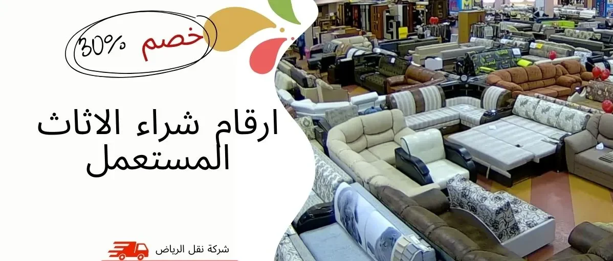

ارقام شراء الاثاث المستعمل 0559865517

أصبحت عملية شراء الأثاث المستعمل أو البحث عن اسعار مستودعات تخزين اثاث بالرياض، خيارًا شائعًا للعديد من الأشخاص الذين يسعون لتوفير المال أو الراغبين في الحصول على قطع مميزة وفريدة، وفي الوقت الحالي ومع تزايد الإقبال على هذا النوع من الأثاث أصبحت أهمية معرفة كيفية اختيار الأثاث المستعمل تبرز بعناية، حيث تختلف الأسعار بناءً على حالته والعلامة التجارية ومدى توافر القطع في السوق، لذلك يعد البحث عن ارقام شراء الاثاث المستعمل أمرًا مهمًا لضمان اختيار الأفضل بأقل التكاليف.
ارقام شراء الاثاث المستعمل
عند شراء الأثاث المستعمل من شركة تخزين اثاث بالرياض، يعتمد السعر على عدة عوامل رئيسية، في الخطوة الاولى يتم تحديد السعر بناءً على حالة الأثاث، حيث يكون الأثاث الذي يظهر عليه علامات الاستخدام أو التلف أقل تكلفة، في الخطوة الثانية تأثر العلامة التجارية بشكل كبير في تحديد السعر، كما يكون الأثاث من العلامات التجارية الشهيرة أغلى حتى وإن كان مستعملًا، و ثالثًا نجد أن السعر أيضًا يعتمد على نوع الأثاث، فعلى سبيل المثال أسعار تختلف الكراسي والطاولات عن أسعار الأرائك أو الأسرة، حيث تؤثر أيضًا عوامل مهمة مثل عمر الأثاث ومدى صيانته على التكلفة، كما أن أيضًا في بعض الأحيان قد نجد مجموعة من الاسعار المغرية لقطع أثاث مستعملة، ولكن يجب عليك أن تتأكد جيداً من جودتها وسلامتها لتجنب أي مشاكل لاحقًا، لذلك من المهم عند البحث عن ارقام شراء الاثاث المستعمل المقارنة بين الأسعار في السوق قبل اتخاذ قرار الشراء.
عوامل مؤثرة في تحديد أسعار الأثاث المستعمل
تتعدد العوامل التي تؤثر في تحديد أسعار الأثاث المستعمل، وتعد حالة الأثاث من أبرز هذه العوامل، وكل ما كان الأثاث في حالة جيدة زادت قيمته الماليه، وإذا كان الأثاث متضرر أو يظهر عليه علامات استخدام قد ينخفض سعره بشكل كبير، كما يعد العامل الثاني المؤثر هو العلامة التجارية حيث تعتبر القطع من العلامات التجارية الشهيرة أغلى ثمنًا حتى وإن كانت مستعملة إضافة إلى ذلك، يؤثر نوع الأثاث نفسه في تحديد السعر، فالأثاث الكبير مثل الأرائك والطاولات يختلف في قيمته عن الأثاث الأصغر مثل الكراسي أو الطاولات الجانبية، بالإضافة إلى عمر الأثاث الذي يلعب أيضًا دورًا مهمًا في تحديد سعره الأثاث الذي تم استخدامه لفترة طويلة قد يفقد بعض قيمته مقارنة بالقطع التي لم يتم استخدامها بشكل مكثف، كما أن سوق العرض والطلب في المنطقة يؤثر على السعر، حيث قد تكون بعض القطع أكثر طلبًا في أماكن معينة مما يرفع من قيمتها.
كيفية تقييم حالة الأثاث المستعمل قبل الشراء
يبحث الكثير عن كيفية تقييم حالة الأثاث المستعمل قبل الشراء، حيث أن عملية القييم تتطلب فحصًا دقيقًا لعدة جوانب للتأكد من جودته وسلامته، أولاً يجب عليك فحص الهيكل العام للأثاث للتأكد من عدم وجود أي كسور أو تلف في الأجزاء الأساسية مثل الأرجل أو الألواح، ثانياً قم بالتحقق من حالة التنجيد أو الأقمشة، وهل هناك بقع أو تمزقات واضحة، وهل الألوان ما زالت ثابتة، كما يجب فحص الأسطح الخشبية أو المعدنية للتأكد من عدم وجود خدوش أو تآكل شديد، ثالثًا عليك أيضًا فحص المفاصل والأدوات المتحركة مثل الأدراج أو الأبواب للتأكد من أنها تعمل بسلاسة دون صعوبة في الفتح أو الإغلاق، ومن المهم أيضًا التأكد من أن الأثاث خالي من الروائح غير المرغوب فيها، مثل الروائح العفن أو الدخان وأخيرًا، يجب التحقق من عمر الأثاث، حيث أن القطع القديمة قد تكون أكثر عرضة للتلف.
نصائح لتوفير المال عند شراء الأثاث المستعمل
عند البحث عن ارقام شراء الاثاث المستعمل يمكن أن يكون طريقة رائعة لتوفير المال، لكن من المهم اتخاذ بعض الاحتياطات لضمان الحصول على أفضل قيمة مقابل المال، لذلك وفرنا لك بعض النصائح التي تساعدك في توفير المال عند شراء الأثاث المستعمل:
البحث والمقارنة
قم بمقارنة الأسعار بين الأفراد والمتاجر المتنوعة، حيث يمكن أن تجد صفقات رائعة على الإنترنت أو في الأسواق المحلية، ولكن من المهم التحقق من الأسعار في عدة أماكن لضمان الحصول على أفضل صفقة.
التفاوض على السعر
لا تتردد في التفاوض على الأسعار مع البائع لأنه في كثير من الأحيان، يمكن الحصول على خصومات أو صفقات أفضل عند التفاوض، خاصة إذا كان الأثاث يظهر عليه علامات استخدام.
الشراء من مصدر موثوق
شراء الأثاث المستعمل من المتاجر المتخصصة أو مواقع الإنترنت ذات السمعة الجيدة يمكن أن يوفر لك الأمان ويمنحك ضمانات إضافية. قد تكون الأسعار أعلى قليلاً، لكنها قد تضمن لك قطعة أثاث في حالة أفضل.
البحث عن العروض والتخفيضات
قم بمتابعة العروض الموسمية أو التخفيضات في المتاجر المتخصصة، وقد يكون أحيانًا هناك صفقات مميزة على الأثاث المستعمل مع التخفيضات أو العروض الخاصة التي توفر لك الكثير من المال.
التحقق من تفاصيل النقل
قم بالتأكد من حساب تكلفة النقل أو التوصيل عند شراء الأثاث المستعم، لأنه قد تكون هذه التكلفة جزءًا مهمًا من السعر الإجمالي، لذا حاول التفاوض على رسوم النقل أو استفد من العروض التي تقدم توصيلًا مجانيًا.
التوجه للأثاث المتين
عليك أن تختار قطع أثاث ذات جودة عالية وطراز بسيط، ويكون الأثاث المصنوع من الخشب الصلب أو المعدن يكون أكثر متانة ويمكن أن يستمر لفترة أطول، مما يقلل من الحاجة لاستبداله في المستقبل.
إذا قمت باتباع هذه النصائح، كما يمكنك التواصل مع شركة نقل الرياض لتوفير الكثير من المال والحصول على أثاث مستعمل بجودة جيدة يناسب ميزانيتك.
الأسئلة الشائعة حول ارقام شراء الاثاث المستعمل
كيف يمكن تحديد قيمة الأثاث المستعمل بناءً على حالته؟
يعتمد تحديد قيمة الأثاث المستعمل بشكل رئيسي على حالته عند رؤيتة، إذا كان الأثاث في حالة جيدة دون أن يوجد به خدوش أو تلف ملحوظ، فإن قيمته تكون أعلى، وتجد في المقابل الأثاث الذي يظهر عليه علامات استخدام أو تآكل يمكن أن يكون أقل تكلفة، لذلك من المهم فحص حالة الأثاث بعناية للتحقق من أي عيوب أو مشاكل قد تؤثر على وظائفه أو مظهره، حيث أن الأثاث الذي تم الحفاظ عليه بشكل جيد، مثل القطع التي تمت صيانتها أو تجديدها بانتظام، سيظل يحتفظ بقيمته لفترة أطول.
هل يمكن الحصول على صفقات عند شراء الأثاث المستعمل من المتاجر المتخصصة أفضل من الأفراد؟
نعم، يمكنك الحصول على أفضل الصفقات عند شراء الأثاث المستعمل من المتاجر المتخصصة وستجد أنها أفضل من الشراء من الأفراد، حيث أن المتاجر المتخصصة غالبًا ما تقدم ضمانات أو شروط إعادة للمنتجات، مما يوفر أمانًا إضافيًا للمشتري، كما أن المتاجر قد تقوم بفحص الأثاث بشكل دقيق قبل عرضه للبيع وهذا يضمن لك أن القطع المعروضة تكون في حالة جيدة، من جهة أخرى قد يبيع الأفراد قطعًا بأسعار أقل لكن دون ضمانات أو فحص دقيق، ما قد يشكل بعض المخاطر فيما يتعلق بالجودة أو وجود العيوب الخفية.
في النهاية بعد أن قدمنا لكم ارقام شراء الاثاث المستعمل يمكن أن يكون خطوة ذكية اقتصاديًا، لكنه يتطلب اتخاذ قرارات مدروسة لضمان الحصول على قيمة مقابل المال، ومع الاهتمام بالتفاصيل مثل الحالة العامة للقطعة، والعلامة التجارية، وطريقة الصيانة، يمكن أن توفر شراء أثاث عالي الجودة بسعر مناسب، كل هذا من خلال البحث والمقارنة، يمكنك العثور على قطع أثاث مستعملة تناسب ذوقك وميزانيتك، مما يتيح لك تحديث منزلك بأقل التكاليف الممكنة.